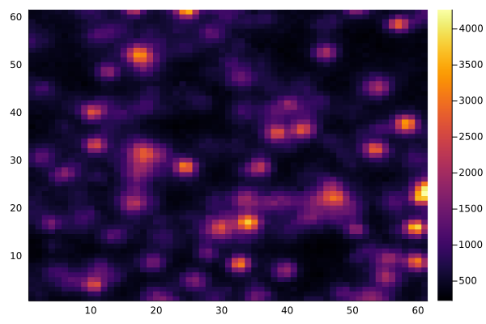
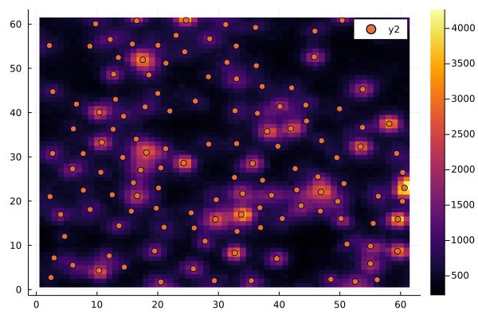

Example
using Plots
using SeqFISH_ADCG
using FileIO
using ImagesLoad example data
ro_img = load("example_data/ro_preprocessed.png")
ro_img = reinterpret.(UInt16, channelview(ro_img));Set Parameters
sigma_lb = 0.87
sigma_ub = 1.22
tau = 2.0*10^12
final_loss_improvement = 1000.0
min_weight = 800.0
max_iters = 200
max_cd_iters = 20
threshold = 0.0;For expediancy of the demonstration, we will choose a small example tile to run ADCG on
example_tile = ro_img[1020:1080, 1220:1280]
heatmap(example_tile)
Now we run ADCG on the tile sample tile
inputs = (example_tile, sigma_lb, sigma_ub, threshold, tau, final_loss_improvement, min_weight, max_iters, max_cd_iters)
ps = fit_tile(inputs)
heatmap(example_tile)
scatter!(ps[1,:], ps[2,:])
ADCG appears to pick up all of the dots. It may have a few extra, but it better to tune the parameters such that too many dots are picked up than too few because SeqFISHSyndromeDecoding is very effective at discarding bad dots.
Running ADCG on a whole image requires breaking up the image into overlapping tiles, running ADCG on each tile, and piecing the tiles back together. All of the Cai Lab's microscopes use 2048X2048 cameras, so SeqFISH_ADCG comes with a special function, fit_2048x2048_img_tiles, that breaks 2048 images up into tiles
points_with_duplicates = fit_2048x2048_img_tiles(ro_img, sigma_lb, sigma_ub, tau, final_loss_improvement, min_weight, max_iters, max_cd_iters, threshold)If you have images that are not of 2048x2048 pixels, you will need to use fit_img_tiles, which fit_2048x2048_img_tiles wraps, and specify your own tile and overlap size. For example fit_2048x2048_img_tiles calls:
tile_width = 64
tile_overlap = 6
points_with_duplicates2 = fit_2048x2048_img_tiles(ro_img, tile_width, tile_overlap, sigma_lb, sigma_ub, tau, final_loss_improvement, min_weight, max_iters, max_cd_iters, threshold)You will need to ensure that the width and height of your image is divisible by tile_width.
The next step is that you will need to remove dots that are too close to each other. This removes duplicates that are in the overlapping regions of the tiles, or may have just been fit twice by ADCG
min_allowed_separation=2.0
points = remove_duplicates(points_with_duplicates, rp+img, sigma_lb, sigma_ub, tau, noise_mean, min_allowed_separation)CSV.write("example_fit.csv", points)